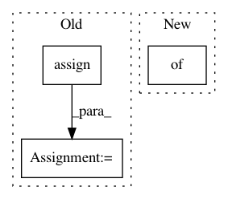

9d468d2c742491af2d2f506c648ddc95ffea6a64,src/sdk/pynni/nni/compression/tensorflow/builtin_pruners.py,SensitivityPruner,calc_mask,#SensitivityPruner#Any#Any#Any#,94
Before Change
threshold = tf.contrib.distributions.percentile(weight, target_sparsity * 100)
// stop gradient in case gradient change the mask
new_mask = tf.stop_gradient(tf.cast(tf.math.greater(weight, threshold), weight.dtype))
mask_update_handler = tf.assign(mask, new_mask)
self.assign_handler.append(mask_update_handler)
return mask
def update_epoch(self, epoch, sess):
After Change
// stop gradient in case gradient change the mask
mask = tf.stop_gradient(tf.cast(tf.math.greater(weight, threshold), weight.dtype))
self.assign_handler.append(tf.assign(weight, weight * mask))
self.mask_list.update({op_name: tf.constant(mask)})
self.if_init_list.update({op_name: False})
else:
mask = self.mask_list[op_name]
In pattern: SUPERPATTERN
Frequency: 3
Non-data size: 3
Instances
Project Name: Microsoft/nni
Commit Name: 9d468d2c742491af2d2f506c648ddc95ffea6a64
Time: 2019-10-20
Author: lanny@mail.hfut.edu.cn
File Name: src/sdk/pynni/nni/compression/tensorflow/builtin_pruners.py
Class Name: SensitivityPruner
Method Name: calc_mask
Project Name: catalyst-cooperative/pudl
Commit Name: fbd16b4f301f09b8868b60a4762700f3251e2cdc
Time: 2019-12-05
Author: zane.selvans@catalyst.coop
File Name: src/pudl/transform/ferc1.py
Class Name:
Method Name: plant_in_service
Project Name: keras-team/keras
Commit Name: b6d23b2e2dfc90480519ab52047006b1936fda02
Time: 2016-07-28
Author: jer.despraz@gmail.com
File Name: keras/backend/tensorflow_backend.py
Class Name:
Method Name: batch_set_value